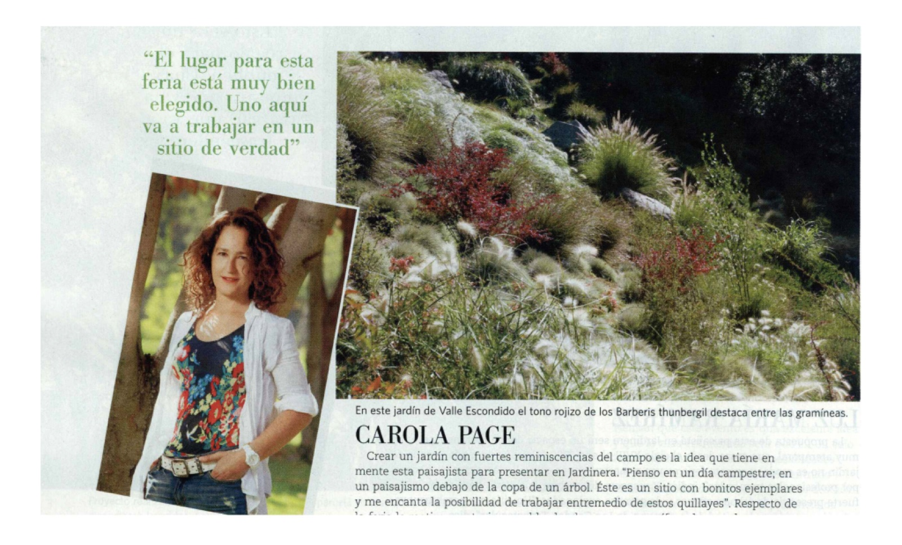

Prensa2011
Carola Page en Vivienda y Decoración
Vivienda y Decoración, El Mercurio
Entrevista a propósito de su participación en Jardinera, ilustrada con el jardín de Valle Escondido donde el tono rojizo de los berberis destaca entre las gramíneas.
El lugar para esta feria está muy bien elegido. Uno aquí va a trabajar en un sitio de verdad.
